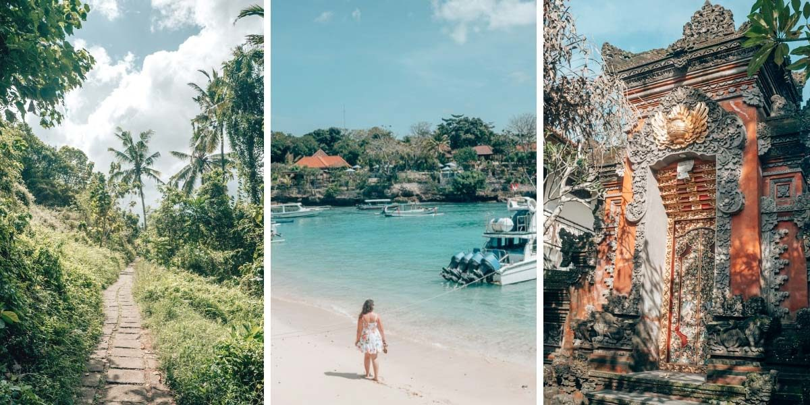
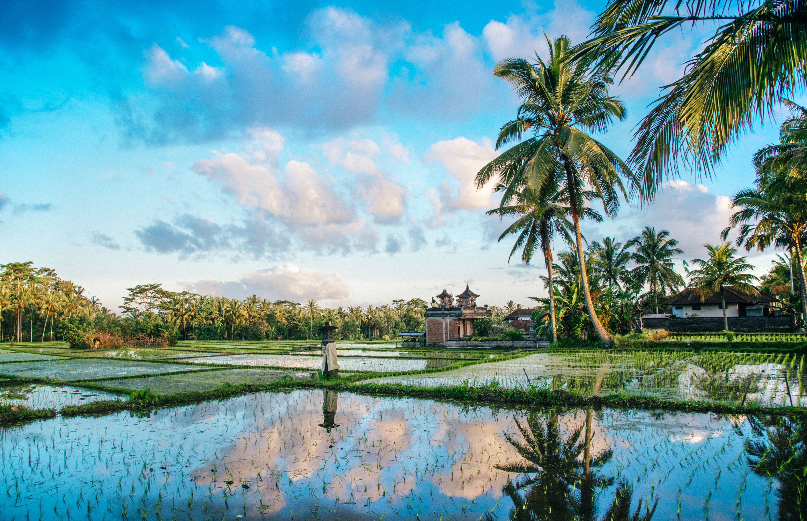

Bali – “Ostrvo bogova“ stvoreno za opuštanje i ljubitelje drevnih kultura
Ako želite da svoj godišnji odmor provedete u opuštanju u egzotičnoj prirodi, a volite da proučavate i drevne civilizacije, vodimo Vas na Bali.
Uživajte u prirodnom raju i zemlji čija istorija počinje 2000. godine p.n.e.
Bali je neverovatno ostrvo koje je nalazi u Indoneziji između Jave na zapadu i Lomboka na istoku, sa izobiljem pirinča, kokosovih palmi, kafe, kakaa, duvana, bambusovih šuma i koralnih grebena. „Jutro sveta“ ili „Poslednji raj na zemlji“, kako ga nazivaju, pravi je mamac za hedoniste, ljubitelje prirode i ekstremnog sporta. Pored prirodnih lepota na Baliju se nalazi oko 2000 hinduističkih hramova koji svojojm raskošnom arhitekturom i skulpturama dominiraju ostrvom. Ovo je, takođe, ostrvo umetnosti i zanata, dramatičnih plesova, muzike i ceremonija kao i dobronamernih i uvek nasmejanih balinežana.
